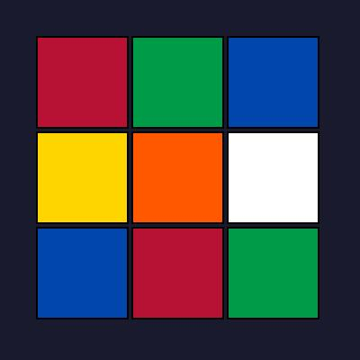

Rubik-kocka
A Rubik-kocka (eredeti nevén bűvös kocka) egy háromdimenziós logikai játék, amelyet Rubik Ernő magyar feltaláló, építész és szobrász alkotott meg 1974-ben. A játék célja, hogy a kocka minden oldalán azonos színű lapok legyenek, miután az oldalakat elforgatták.
Történet
Rubik Ernő 1974-ben alkotta meg a kockát Budapesten. Eredetileg oktatási segédeszközként készítette, hogy hallgatóinak bemutassa a térbeli mozgásokat. Az első prototípus fából készült, és a belső mechanizmus kidolgozása több hetet vett igénybe. 1975-ben kapott magyar szabadalmat, majd 1977-ben kezdték el gyártani Magyarországon "Bűvös kocka" néven. A játék 1980-ban jelent meg nyugaton "Rubik's Cube" néven, és azonnal világsiker lett.
Típusok és változatok
- 2×2×2 - Pocket Cube (mini kocka)
- 3×3×3 - Klasszikus Rubik-kocka
- 4×4×4 - Rubik's Revenge
- 5×5×5 - Professor's Cube
Világrekordok
| Kategória | Idő | Rekorder |
|---|---|---|
| 3×3×3 egyedül | 3.47 mp | Yusheng Du |
| 3×3×3 átlag | 4.86 mp | Max Park |
| Bekötött szemmel | 14.51 mp | Tommy Cherry |
| Egy kézzel | 6.20 mp | Max Park |
Képek